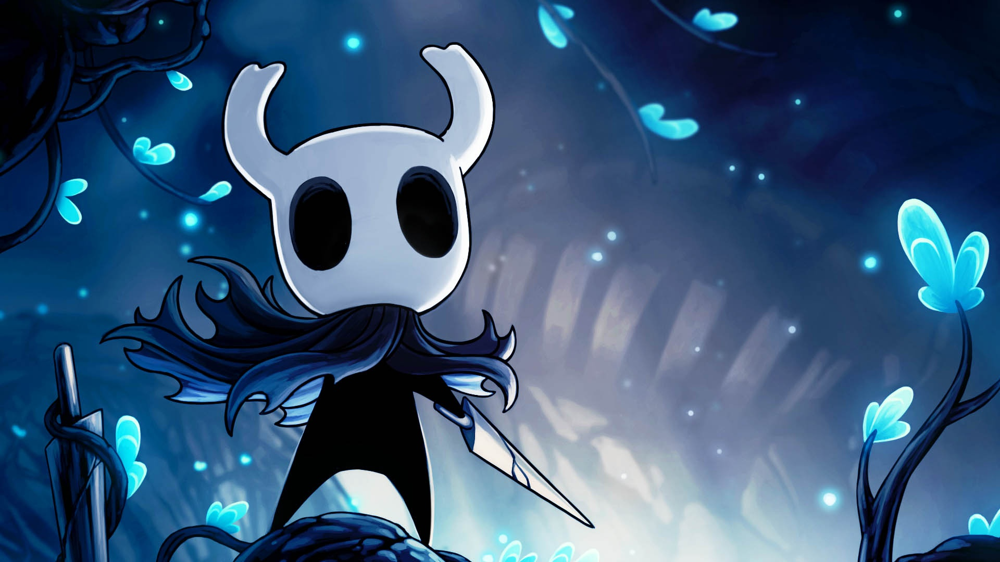

Introducción
Antes del reino de Hallownest, había una criatura todopoderosa, EL Destello, que a través de su luz engendró a la tribu de las polillas. Entre todas, crearon el reino de Hallownest, un lugar para que los artrópodos pudieran pasar sus vidas. Pronto llegaron artrópodos de todo tipo. La tribu de las Mantis, un pueblo guerrero o la tribu de las Abejas, una sociedad jerarquizada, eran de las muchas especies que llegaron al nuevo reino, y aunque respetaban a Destello como máxima autoridad, las Mantis tenian su propio gobierno, y las abejas se encerraron en su colmena, ajenas a todo lo que pasara en Hallownest.
Todo era paz y armonía, o eso parecía. Destello en realidad era un parásito que aprovechaba las mentes débiles de los artrópodos que la veneraban, para sus propios fines, a cambio, ella les concedia los deseos que pidieran. Eso ya era bastante, aunque los artrópodos no se daban cuenta y alguno que se daba cuenta no le importaba. Sus mentes poseídas no eran problema en comparación a los deseos que conseguían. A nadie le importó hasta que llegó un ser que lo cambiaría todo.
saviavida
Conoce todo lo relacionado al DLC life-blood
